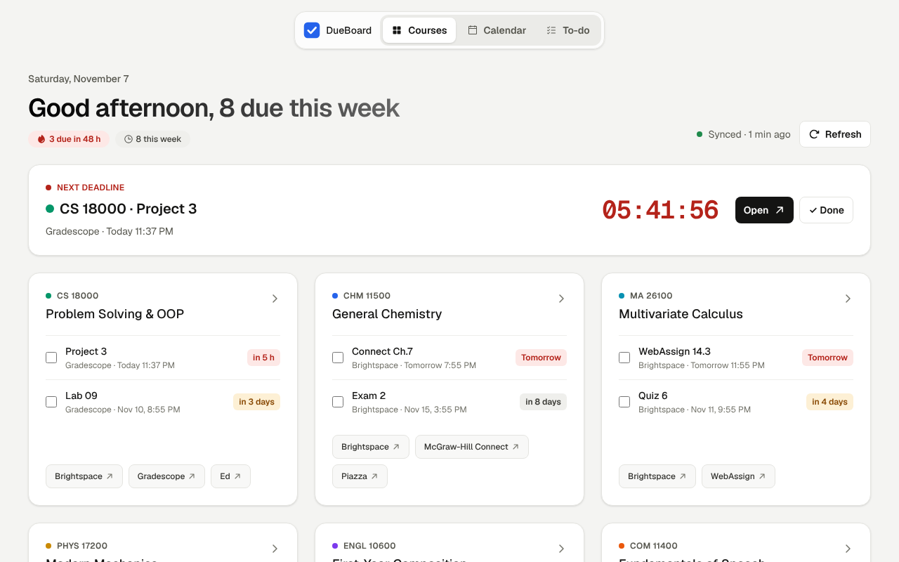

Every deadline,
one page.
Stop clicking through every course in Brightspace and signing in to Gradescope, Pearson and WileyPLUS one by one. Sign in to Brightspace once — DueBoard finds the rest and puts every due date in one place.
Add to Chrome See what it doesFree · Open source · Chrome and Edge · Currently for Purdue's Brightspace

One sign-in
Brightspace is the only account you connect. DueBoard reads your courses and discovers which homework platforms they use.
Next deadline
The nearest deadline is always on top with a live countdown. Open it in one click, or mark it done and see what's next.
Calendar and to-do
Week and month views show which days pile up. Tick work off in the to-do list; submitted work is ticked for you.
Course cards
Each course shows what's due next and shortcuts to Gradescope, Pearson, WileyPLUS, Achieve, Piazza, Ed and more.
Your data stays on your computer
DueBoard uploads, collects and analyzes nothing, and never sees your password. Uninstall it and the data is gone. Read the privacy policy